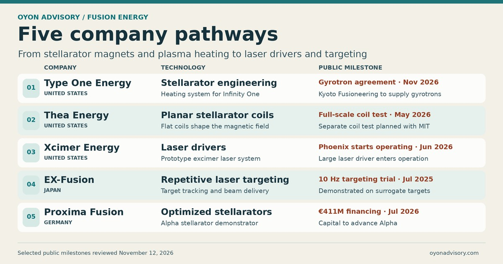

Back to Research & Perspectives
Fusion Energy — Five Company Pathways
In September 2026, Commonwealth Fusion Systems agreed to buy more than 10,000 kilometres of high-temperature superconducting tape from Japan’s Fujikura for its planned ARC fusion plants. The order shows how a market for fusion hardware can develop before the first plant delivers electricity. Five companies illustrate what is being built and tested along the way, from magnets that shape a plasma to lasers that must fire reliably for shot after shot. [1] [2]


Where the technologies fit
A tokamak confines hot plasma in a ring using external magnets and a current through the plasma. A stellarator creates the twist in its magnetic field using shaped external coils, an approach suited to continuous operation. Laser inertial fusion compresses a tiny fuel capsule in a single shot and must repeat that process rapidly to deliver sustained power. Each route places different demands on suppliers. A stellarator needs precisely manufactured coils and reliable plasma heating. A laser fusion plant needs efficient drivers, durable optics, and a way to position a fresh target for every shot. [3] [4] [5] [6]
Five companies and their recent milestones
1. Type One Energy · United States · Stellarator engineering
Type One is developing Infinity One, an engineering prototype at the Tennessee Valley Authority’s Bull Run site. It announced a $200 million Series B in October 2026. In November, Kyoto Fusioneering agreed to supply gyrotrons, which generate microwaves to heat the plasma. That agreement gives the project a named supplier for a critical subsystem. [7] [8]
2. Thea Energy · United States · Planar stellarator coils
Thea uses arrays of flat coils to create the shaped magnetic field a stellarator needs. It reported operating its first full-scale shaping coil in May 2026 and announced a $100 million Series B that month. In November, it announced a collaboration with MIT to test a separate encircling coil. The next question is whether the assembled array can produce the required field accurately and consistently. [9] [10] [11]
3. Xcimer Energy · United States · Laser drivers
Xcimer began operating Phoenix, its prototype excimer laser system, in June 2026. The project brings a large laser driver into operation. The next evidence to watch is how efficiently it converts electricity into laser pulses, how often it can fire, and how much maintenance it requires. [12] [6]
4. EX-Fusion · Japan · Repetitive laser targeting
EX-Fusion reported repeatedly hitting surrogate targets 10 times per second in July 2025, following a ¥2.6 billion Series A announcement in June. The trial tested whether the system could repeatedly hit a target at speed. Longer runs will show how reliably the tracking and optics hold up. [13] [14]
5. Proxima Fusion · Germany · Optimized stellarators
Proxima announced a €411 million financing round in July 2026 to advance its Alpha demonstrator. A separate agreement with Bavaria, RWE, and the Max Planck Institute for Plasma Physics outlines a path from Alpha in Garching to a proposed power plant at Gundremmingen. The next evidence to watch is how that plan translates into funded engineering work and tested hardware. [15] [16]
What these milestones tell us
A coil test shows that a component can operate under specified conditions. A laser tracking trial shows that a machine can repeat one step at speed. A supply agreement shows that a developer is committing to hardware. These milestones help identify where fusion suppliers can win work today. The power-plant test comes when those subsystems operate together long enough to measure net electricity, component lifetime, and the time it takes to service the machine. [1] [2] [9] [13]
Selected public sources
- Commonwealth Fusion Systems — Fujikura HTS tape purchase agreement
- IEA — The State of Energy Innovation 2026, fusion energy readiness
- ITER — The tokamak
- Max Planck Institute for Plasma Physics — The stellarator
- IAEA — Magnetic and inertial confinement fusion
- U.S. Department of Energy — Fusion Science and Technology Roadmap
- Type One Energy — $200 million Series B
- Type One Energy and Kyoto Fusioneering — Infinity One gyrotron agreement
- Thea Energy — Full-scale planar shaping coil operation
- Thea Energy — $100 million Series B
- Thea Energy — MIT collaboration on encircling-coil testing
- Xcimer Energy — Start of operations at Phoenix
- EX-Fusion — 10 Hz surrogate-target demonstration
- EX-Fusion — ¥2.6 billion Series A
- Proxima Fusion — €411 million financing
- Proxima Fusion — Agreement with Bavaria, RWE and IPP